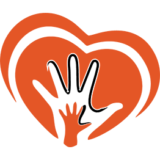

Us presento TATA - Llar de criança
Un projecte de Mare de Dia.
Sóc la María, i junt amb l’Axel, la meva parella, i el Noah, el meu fill de 19 mesos què hi serà amb mi a aquest projecte, obrim casa nostra amb tota la il·lusió i tot l’amor, per acollir a les famílies i als seus fills/es.
Tata neix a partir de la vivència personal més important de la meva vida: l’arribada del Noah. El seu naixement va suposar un terratrèmol què em va sacsejar fins als ciments, per treure el millor de mi mateixa.
INTENCIONS EDUCATIVES DE LA LLAR DE CRIANÇA
Tata vol aconseguir crear un espai segur, on cada nen es senti lliure per observar, escoltar, tocar, i olorar el món a la seva manera i al seu ritme segons el seu procés de maduresa i construcció interna. La meva responsabilitat com a Mare de Dia, és la de posar al seu abast uns materials amables què el convidin a experimentar la seva independència i autosuficiència en el seu procés d’aprenentatge, dins d’un entorn pensat i preparat per a aquesta finalitat. Hem de procurar conjuntament i amb consonància amb les famílies, saber identificar el seu moment evolutiu a la vegada que el deixem que sigui la seva pròpia voluntat la que impulsi al seu aprenentatge, guiat sempre que ho necessiti, de la nostra mà.
Principis metodològics i pedagògics
Aquest projecte es basa principalment en tres corrents pedagògiques: la de María Montessori, Rudolf Steiner i la seva pedagogia Waldorf, i la de Emmi Pikler, ja que considero que els seus principis pedagògics són com una mena de sinergia la qual encaixa amb els fonaments que considero més importants, com la defensa del desenvolupament integral del nen mitjançant l’exploració, el desenvolupament de la creativitat, l’amor i la llibertat.
- 

MARIA MONTESSORI
Aquesta educadora i metgessa defensa el foment de la motivació del nen per aprendre coneixements del seu interès.
WALDORF
Metodologia basada en etapes de desenvolupament basat en l’experiència i joc creatiu, foment d’habilitats socials i de creació artística, i millora de l'empatia i comprensió intel·lectual
EMMI PICKLER
Profunds estudis sobre el comportament i desenvolupament dels nadons, defensa la no intervenció de l’adult en el seu desenvolupament psicomotriu.
Tenim les portes obertes

Característiques
La nostre llar s’ha condicionat adequant uns espais preparats amb material específic per a cada etapa evolutiva del nen o nena.

ESPAIS
Els diferents espais han de respondre a les necessitats infantils i a les característiques de cada nen/a, així com del grup.

MAterials
Els materials han de cuidar l’ús del color, la llum, el so i l’olor en el disseny dels espais, així com la riquesa sensorial dels materials

Estètica
Procurem que sigui un ambient similar al d’una llar, acollidor i harmònic (materials naturals, colors suaus, etc.) i evitem que els espais siguin impersonals, freds, uniformes i sense personalitat pròpia.